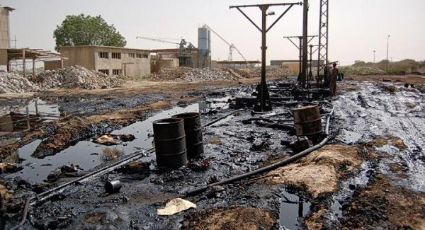

La contaminación es la presencia o acumulación de sustancias en el medio ambiente que afectan negativamente el entorno y las condiciones de vida, así como la salud o la higiene de los seres vivos. Con este significado también se suele utilizar el concepto de contaminación ambiental.
Como contaminación también se denomina una alteración en una sustancia o un producto, como un alimento o una muestra. Por ejemplo: “La contaminación de las muestras obligó a los científicos a recoger nuevas muestras.
Esta palabra procede del latín contaminatĭo, contaminatiōnis, que se deriva del verbo contamināre, que significa ‘corromper, ensuciar o alterar por el contacto’.
Existen diferentes tipos de contaminación dependiendo del ámbito en que se produzcan las alteraciones de las condiciones normales para la vida
La contaminación del agua es una modificación o alteración del agua que tiene consecuencias negativas en el medio ambiente y en los seres vivos. También se utiliza el concepto de contaminación hídrica. El ser humano es el principal responsable de la contaminación del agua, especialmente a través del vertido de aguas residuales, que no han sido tratadas y que proceden de actividades como la industria, la ganadería y la agricultura, en dicho medio. Se pueden distinguir tres tipos de agentes contaminantes del agua: físicos, químicos y biológicos.
La contaminación del aire es la existencia de partículas sólidas, líquidas y gases perjudiciales para los seres vivos y el entorno. En ocasiones, se utilizan términos semejantes como contaminación atmosférica. La contaminación del aire puede provocar graves problemas de salud a través de la inhalación de sustancias tóxicas. Puede proceder de fuentes naturales como, por ejemplo, la erupción de un volcán, o de la acción del ser humano. Algunas de estas sustancias contaminantes del aire son el monóxido de carbono, el ozono y el metano. El smog, una especie de niebla formada por una mezcla de humo y partículas en suspensión, es una evidencia de la contaminación del aire en las ciudades industriales.
La contaminación del suelo es la presencia de sustancias que afectan negativamente las características y propiedades del suelo y que provocan desequilibrios físicos, químicos y biológicos que afectan de forma negativa a los seres vivos y el entorno. El suelo se puede contaminar por influencia del aire o del agua, que introduce agentes contaminantes, pero también al acumular o arrojar sustancias nocivas como los fertilizantes. Algunas consecuencias considerables de la contaminación del suelo son el aumento de la erosión y la disminución de la fertilidad del terreno.

La contaminación visual es la modificación de un entorno producida por la existencia de uno o varios elementos, cuya presencia impide o perjudica la visibilidad o afecta negativamente la estética de un lugar. La contaminación visual puede tener consecuencias perjudiciales para la salud, como el estrés. Algunos ejemplos de contaminación visual son la acumulación de carteles publicitarios en las carreteras o espacios urbanos, o la construcción de edificios en zonas protegidas.
Existen varios tipos de consecuencias como el debilitamiento de la capa de ozono, problemas para la salud, contamina el agua, el suelo, el aire, a los animales y al derretimiento de los polos.
Es inevitable el no generar basura con las acciones que hacemos dia a dia, por otro lado si podemos disminuir la cantidad de basura que generamos haciendo uso de bolsas de tela al ir a comprar a un centro comercial o super-mercado, otra cosa que podemos hacer de manera local es evitar usar tanta agua (lavar el carro con cubetas, bañarse en el menor tiempo etc) al igual que podemos rejuntar la basura que este a nuestro alrededor.
Otras propuestas


 2
2 4
4 5
5